Dark Souls: Zrození legendy
Když v září roku 2011 vyšlo Dark Souls pro konzole PlayStation 3 a Xbox 360, jen málokdo tušil,
že se právě zrodil jeden z nejvlivnějších titulů 21. století. Hra vznikla jako spirituální nástupce
Demon's Souls (2009). Režisér Hidetaka Miyazaki a studio FromSoftware se však chtěli vymanit z
exkluzivity pro Sony, a tak se spojili s vydavatelem Bandai Namco, aby svou temnou vizi mohli přinést
globálnímu, multiplatformnímu publiku.
Vývoj hry byl nesmírně ambiciózní, což si vybralo svou daň. Miyazakiho snaha o vytvoření gigantického,
logicky propojeného světa bez nahrávacích obrazovek narážela na technické i časové limity. Zatímco první
polovina hry je dodnes považována za učebnicový příklad dokonalého level designu, druhá polovina vývoje
trpěla drastickými škrty. Zejména lokace Ztracený Izalith (Lost Izalith) a boss Lůžko
Chaosu (Bed of Chaos) musely být dokončeny ve velkém spěchu, což sám Miyazaki v pozdějších
rozhovorech s lítostí přiznal a omluvil se za ně.
Navzdory těmto technickým škobrtnutím byla hra přijata s absolutním nadšením. Kritici opěvovali její
nekompromisní, ale férovou povahu, která ostře kontrastovala s tehdejším trendem herního průmyslu "vodit
hráče za ručičku". Fenomenální úspěch navíc spustil nevídanou komunitní akci – více než 90 tisíc
fanoušků podepsalo petici za vydání hry na PC. Bandai Namco v roce 2012 vyhovělo a vydalo Prepare to
Die edici. Samotný PC port byl sice zpočátku katastrofálně neoptimalizovaný, ale komunita
(konkrétně modder s přezdívkou Durante) jej během několika hodin opravila, čímž se zpečetil status hry
jako kultovního díla s jednou z nejoddanějších komunit na světě.
Dopad Dark Souls na herní průmysl je nevyčíslitelný. Hra defacto stvořila vlastní subžánr známý jako
"Soulslike" a nastavila nový standard pro design soubojových systémů a budování světa. Sousloví "Je
to Dark Souls mezi..." se stalo tak nadužívaným novinářským příměrem pro jakoukoliv obtížnější
hru, až se proměnilo v internetový mem. Dark Souls zkrátka změnilo způsob, jakým veřejnost vnímá výzvu
ve videohrách.
Dark Souls také vyhrálo několik extrémně prestižních cen, zejména herní-komunitou-zvolená 'Ultimate
Game of all
Time Award' [ "Cena pro Ultimátní Hru Všech Dob" ] na Golden Joystick Awards roku 2021.
Lordran: Architektura zmaru a Skrytá pravda
Z uměleckého hlediska je prvotní Dark Souls často analyzováno ne jako tradiční RPG, ale spíše
jako melancholická archeologická expedice. Hráč je vržen do Lordranu, bájné říše starých bohů. Nezkoumá
však prosperující království, nýbrž jeho hnijící mršinu. Zlatý věk (Věk ohně) už dávno pominul. Vše je
zchátralé, prorostlé kořeny a pokryté prachem staletí. Hra neprezentuje tradiční "Power fantasy" (iluzi
moci), kde by se hráč cítil jako nepřemožitelný zachránce. Jste jen bezvýznamný nemrtvý, který bloudí v
ruinách civilizace, jež byla nepředstavitelně větší než on sám.
Největším mistrovským dílem hry je bezpochyby design jejího světa. Lordran není sérií oddělených úrovní,
ale gigantickým, vertikálním, trojrozměrným labyrintem. Geografie dává dokonalý smysl. Hráč se může
hodiny prodírat jedovatými bažinami a temnými jeskyněmi, jen aby na konci otevřel zrezivělou bránu,
vyjel výtahem a zjistil, že se vrátil do výchozí Svatyně (Firelink Shrine). Tyto "Heuréka" momenty, kdy
se mapa v hráčově hlavě nečekaně propojí, jsou dodnes považovány za nepřekonaný vrchol herního level
designu.
Miyazaki tento svět naplnil narativní technikou zvanou environmentální vyprávění (environmental
storytelling). Jako dítě četl anglické fantasy knihy, a protože mnoha slovům nerozuměl, musel
si prázdná místa v příběhu domýšlet vlastní fantazií. Přesně tento pocit přenesl do hry. Příběh vám není
naservírován v dlouhých filmových ukázkách. Zjišťujete ho z popisků nalezených předmětů, z toho, kde
leží která mrtvola, jaký má na sobě prsten nebo jaká socha stojí v pozadí arény. Nic ve hře není
umístěno náhodně.
Tematicky se příběh zaobírá nevyhnutelností entropie a strachem z konce. Gwyn, Pán slunečního svitu,
se natolik děsil příchodu Věku Temnoty (který je přirozeným věkem lidí), že obětoval vlastní duši, aby
uměle prodloužil Věk Ohně. Dopustil se "Prvního hříchu" a porušil zákony přírody. Celé slavné proroctví
o Vyvoleném Nemrtvém, za kterého hrajete, je ve skutečnosti jen propagandistická lež starých bohů. Mají
vás zmanipulovat k tomu, abyste porazili ty nejsilnější bytosti světa, zesílili, a nakonec se sami
upálili v Prvním plameni jako další palivo pro jejich umírající éru. Volba je na konci jen na hráči:
obětovat se pro udržení iluze, nebo nechat plamen vyhasnout a přivítat temnotu.
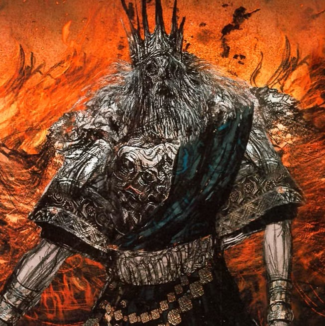
Gwyn, Pán Slunce
Klikni pro rozbor
Nejmocnější z bohů a strůjce pádu Věčných draků. V Prvním plameni nalezl Duši Světla a za pomoci
svých blesků rozbil kamenné šupiny draků. Následně založil majestátní město bohů Anor Londo a
odstartoval zlatý Věk Ohně.
Jeho panování však bylo definováno hrůzou. Gwyn se nezměrně děsil příchodu Věku Temnoty, který
měl patřit lidem (dědicům Temné duše). Aby oddálil nevyhnutelné, obětoval sebe sama Prvnímu
plameni jako palivo. Toto zoufalé gesto zvrátilo běh přírody, zrodilo Kletbu Nemrtvých a udělalo
z něj bezduchou, ohořelou schránku – Pána Popela (Lord of Cinder), který slepě střeží
vyhasínající oheň v Peci prvního plamene.
Velký meč Velkého Pána (Great Lord Greatsword)
Zbraň ukovaná z Gwynovy duše. Kdysi tento masivní meč vyzařoval oslepující sílu
blesků, s níž Gwyn trhal drakům křídla. Dnes z něj zbylo jen zčernalé, ohořelé
torzo.
Velký meč zrozený z
duše Gwyna, Pána Popela. Sám Pán i jeho mocný meč jsou ale již dlouho
znetvořeni plamenem, pro který obětoval svou vlastní existenci.
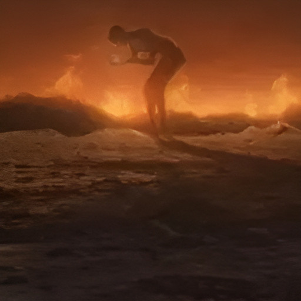
Nenápadný Pygmej
Klikni pro rozbor
Zatímco Gwyn, Čarodějnice z Izalithu a Nito nalezli v Prvním plameni obrovské duše reprezentující
elementární síly (světlo, život, smrt), čtvrtou, jedinečnou Duši Pánů nalezla postava známá
pouze jako Nenápadný Pygmej (Furtive Pygmy). Byla to Temná duše (The Dark Soul).
Zatímco bohové si svou moc syslili pro sebe, Pygmej udělal pravý opak. Svou Temnou duši
roztříštil na miliony nepatrných kousků a rozdělil je mezi prázdné schránky přežívající v
temnotě. Z těchto kousků vzniklo Lidskost (Humanity) a zrodila se lidská rasa. Pygmej byl
historií záměrně zapomenut, vymazán z análů bohy, kteří se děsili dne, kdy se tyto fragmenty
Temné duše opět spojí a lidé převezmou vládu nad světem ve Věku Temnoty.
Lidskost (Humanity)
Drobný, černý fantom, kterého hráči sbírají. Není to jen herní mechanika pro
léčení; je to doslova fragment původní Temné duše, fyzický důkaz toho, že každý
člověk v sobě nese zlomek moci Nenápadného Pygmeje.
Drobný černý přízrak nalezený na mrtvolách.
Obyčejná duše je zdrojem veškerého života, ať už lidského či jiného. Ale co
je to Lidskost? Pokud duše představuje život, pak tento temný kousek
představuje to jediné, co dělá člověka člověkem.
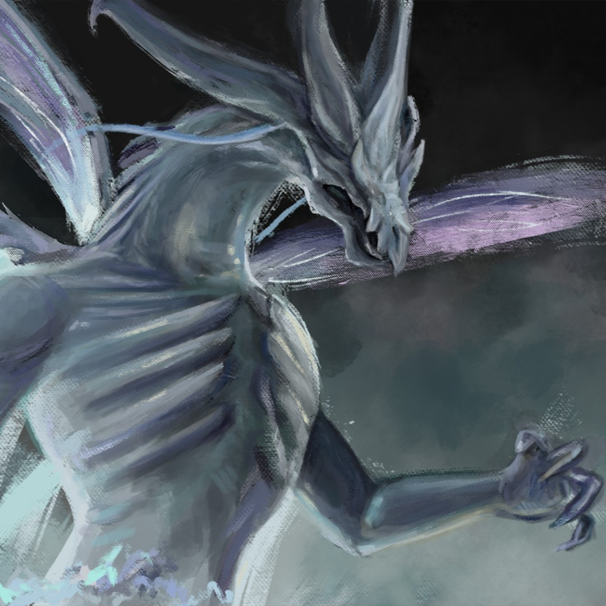
Bezšupinatý Seath
Klikni pro rozbor
Seath, narozen jako mutant bez kamenných šupin, nikdy neokusil nesmrtelnost svých dračích bratří.
Sžíraný závistí se přidal ke Gwynovi a prozradil mu tajemství zranitelnosti Věčných draků. Tím
zpečetil osud celého svého druhu.
Za tuto zradu obdržel od Gwyna titul vévody, kus jeho božské duše a obrovský archiv. Zde Seath
strávil staletí zvrácenými magickými experimenty ve snaze vynalézt umělou nesmrtelnost za pomoci
prapůvodních krystalů. Tyto experimenty, plné únosů nevinných žen z Lordranu, mu sice
nesmrtelnost zajistily, ale zcela a nenávratně mu vzaly zdravý rozum.
Velký meč Měsíčního svitu (Moonlight Greatsword)
Magická zbraň utkaná z čistého krystalického světla, kterou hráč získá pouze
odetnutím ocasu samotného Seatha. Je ztělesněním jeho prastaré, zvrácené magie.
Tato zbraň, vytržená
z ocasu Bezšupinatého Seatha, dědice krystalů, je protkána nesmírnou a
mrazivou lunární mocí. Málokdo však dokáže tuto sílu ovládnout, aniž by sám
propadl šílenství.
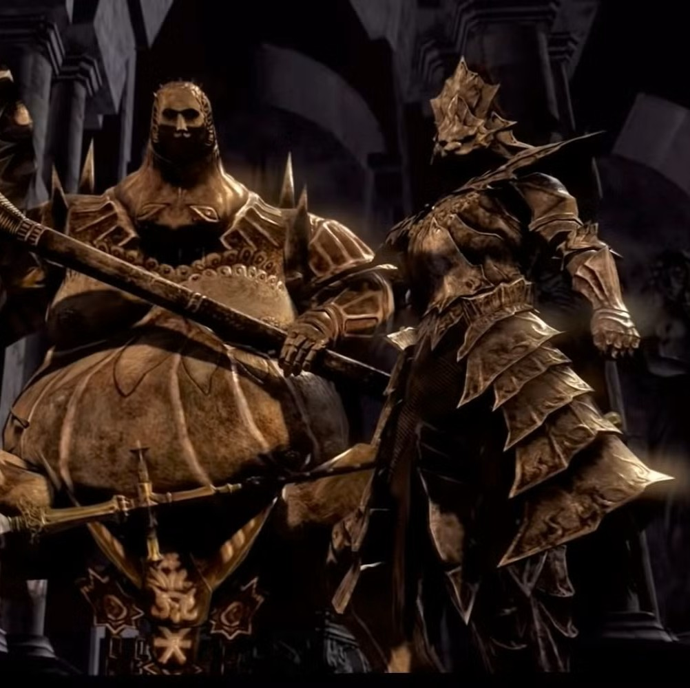
Ornstein & Smough
Klikni pro rozbor
Legendární duo, které tvoří nejslavnější a nejvíce ikonický boss-fight v historii série. Hlídají
Nádobu Pánů (Lordvessel) v opuštěné katedrále Anor Londa a představují nepřekonatelnou zkoušku
pro každého nemrtvého.
Ornstein je bleskurychlý drakobijec, čestný kapitán Gwynových rytířů. Smough je obrovitánský
popravčí s drtivým kladivem, jehož zvyk požírat kosti svých obětí ho stál přijetí mezi elitní
rytíře. Mechanika souboje mistrovsky využívá jejich kontrast – zatímco Ornstein k vám "dolétne"
přes celou arénu za sekundu, Smough boří pilíře a odřezává vám únikovou cestu. Když jednoho z
nich zabijete, druhý absorbuje jeho sílu a plně se uzdraví.
Kopí Drakobijce (Dragonslayer Spear)
Zbraň samotného kapitána Ornsteina, infuzovaná prastarou silou blesku, která
dokázala drásat neprůrazné šupiny draků.
Křížové kopí, jenž
svíral Drakobijec Ornstein. Říká se, že s tímto kopím, obdařeným bleskem a
hnaným neuvěřitelnou silou, dokázal rozpůlit balvan velikosti domu vejpůl.
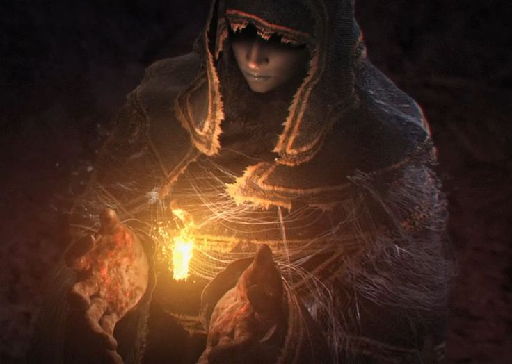
Čarodějnice Izalith
Klikni pro rozbor
Původní objevitelka Duše Života a mistryně ohnivé magie. Čarodějnice ze ztraceného města Izalith
pomohla Gwynovi spálit starý svět. Na rozdíl od moderní pyromancie, její ohnivá magie
nepředstavovala jen destrukci, ale prastaré, čisté umění života.
Její příběh je varováním před pýchou. Když První plamen začal hasnout, Čarodějnice se pokusila za
pomoci své Duše Pánů vytvořit plamen nový, umělý. Tento ambiciózní čin však fatálně selhal. Nový
plamen se vymkl kontrole, zmutoval a vznikl Plamen Chaosu (Chaos Flame), který město Izalith
zničil a svou stvořitelku i většinu jejích dcer pohltil a znetvořil v hrůzná démonská stvoření.
Ohnivá bouře (Firestorm)
Prapůvodní a nejbrutálnější forma pyromancie, odkazující na prastaré umění
Izalithských čarodějnic, kdy oheň ještě nebyl oddělen od chaosu.
Dávné kouzlo, které
se už dávno vymklo kontrole. Umění ovládat oheň má své hranice, ale
Čarodějnice Izalith a její dcery kdysi s plameny tančily. Dokud je tytéž
plameny samy nestrávily.
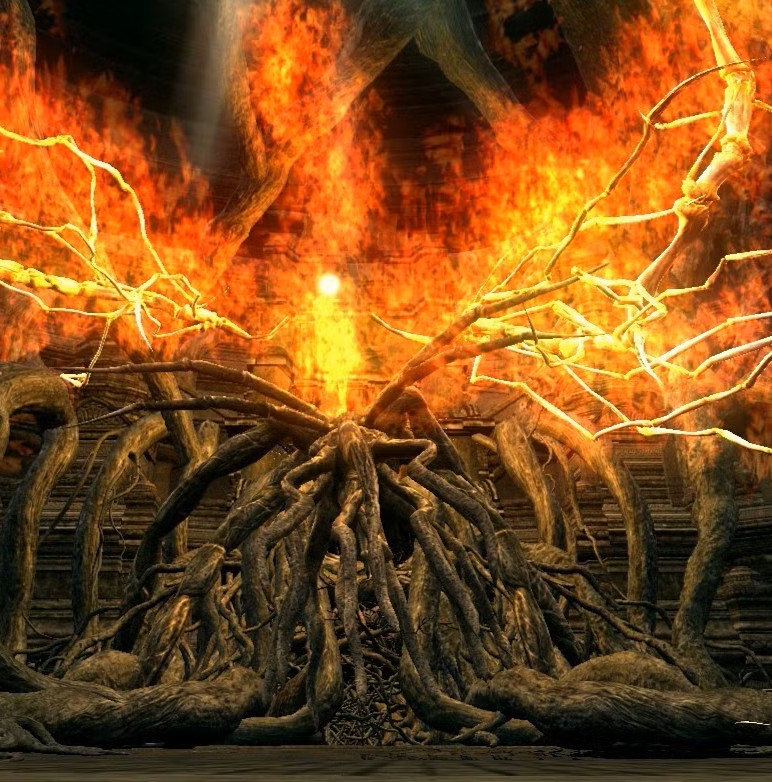
Lůžka Chaosu (Bed of Chaos)
Klikni pro rozbor
Samotné epicentrum katastrofy ve Ztraceném Izalithu. Lůžko Chaosu není bytost, ale děsivý, hořící
biologický parazit sestávající z propletených kořenů a plamenů. Jde o přímý následek selhání
Čarodějnice Izalith – toto stvoření je zdrojem veškerého démonického života v Lordranu.
Z herního hlediska jde o nejkontroverznější boss-fight v historii FromSoftware, řešený formou
smrtících pastí a propadající se podlahy, spíše než klasického boje. Uprostřed této nezničitelné
změti větví se však ukrývá srdce: malý, bezbranný hmyz, který je ve skutečnosti onou pyšnou
Čarodějnicí, jež za svůj hřích zaplatila ztrátou veškeré lidskosti a důstojnosti.
Duše Pána (Lůžka Chaosu)
Tato Duše Pánů nedává sílu do zbraně. Je to pokřivený artefakt nutný k naplnění
Nádoby Pánů, důkaz padlého rodu Izalith.
Čarodějnice Izalith
se pokusila replikovat První plamen skrze samotnou Duši Života, avšak
neuspěla. Vznikla tak odporná ohyzdnost plná života a stvořitelka všech
démonů – Lůžko Chaosu.
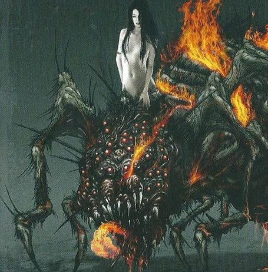
Quelaag, Čarodějnice Chaosu
Klikni pro rozbor
Jedna ze dcer Čarodějnice Izalith. Když Lůžko Chaosu explodovalo, Quelaag a jedna z jejích sester
se pokusily utéct hluboko do Blighttownu. Obě však byly zasaženy Chaosem a jejich spodní
polovina těla srostla s gigantickými ohnivými pavouky.
Ačkoliv působí jako agresivní zrůda blokující cestu ke Zvonu probuzení, její příběh je hluboce
tragický. Její sestra utrpěla při mutaci mnohem horší následky, oslepla a neustále trpí v
agónii. Quelaag nezabíjí hrdiny kvůli zlobě nebo moci; vraždí nemrtvé jen proto, aby získala
jejich Lidskost (Humanity), kterou pak nosí své sestře jako lék tišící její nepředstavitelné
bolesti.
Quelaagin Meč Zuřivosti (Quelaag's Furysword)
Zakřivený meč tvořený pavoučí tkání, vytvořený z duše samotné Quelaag. Při
seknutí čepel vzplane ohněm Chaosu.
Démonický meč, jenž
se zrodil z duše Quelaag. Jeho čepel je obklopena plameny Chaosu.
Zvláštností této zbraně je, že její zničující síla roste úměrně s množstvím
Lidskosti, kterou její nositel vlastní.
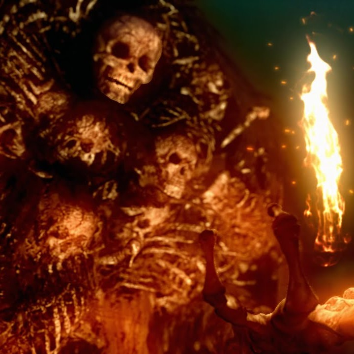
Pán Hrobu Nito
Klikni pro rozbor
První z mrtvých (First of the Dead). Nito je jedním ze čtyř původních vlastníků Duší Pánů – v
plameni objevil Duši Smrti. Je to masivní, neforemná entita stvořená z tisíců navzájem
propletených koster spojených temnou magií a chuchvalci prastaré špíny.
Během války proti drakům Nito uvolnil toxické miasma nákazy a smrti, které oslabilo kamenné
draky.
Po válce se stáhl hluboko do podzemí Lordranu, do černočerné Hrobky obrů (Tomb of the Giants).
Neúčastní se politikaření bohů ani pletich s ohněm. Pouze tiše dříme v temnotě jako manifestace
nevyhnutelného konce veškerého života, kde chladně spravuje samotný koncept smrti.
Meč Pána Hrobu (Gravelord Sword)
Obrovský, hrubý zakřivený meč tvořený kostmi zemřelých, který způsobuje rychlou a
smrtelnou otravu (Toxic). Hráč ho může získat pouze, pokud složí přísahu
samotnému Nitovi.
Meč, kterým se
prokazují Služebníci Pána Hrobu Nita. Vyřezán z kostí padlých a nasáklý
strašlivým jedem miasmatu, které kdysi zahubilo nejednoho Prastarého draka.
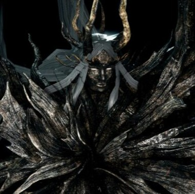
Čtyři Králové
Klikni pro rozbor
Kdysi spravedliví a moudří vládci vzkvétajícího lidského města Nové Londo. Gwyn si jich cenil
natolik, že jim propůjčil obrovský fragment své vlastní Duše Pánů. Tato moc je však nezachránila
před pokušením.
Králové byli svedeni prastarým hadem Kaathem, který je naučil umění vysávání cizí lidskosti
(Lifedrain). Propukla v nich neukojitelná touha po moci a Temnotě, a celé jejich město propadlo
Propasti (The Abyss). Ve snaze zabránit šíření nákazy do zbytku Lordranu učinili Gwynovi
loajální mágové děsivé rozhodnutí – Nové Londo kompletně zatopili vodou. Obětovali tisíce
nevinných obyvatel jen proto, aby Čtyři Krále a jejich temné rytíře navždy uvěznili na dně
podzemní propasti.
Odkázaný fragment Duše Pána
Kus božské duše, který Králové kdysi dostali od Gwyna. I když byli Králové
pohlceni Temnotou a zmutovali do ohavných stvoření, část Gwynova světla v nich
po staletí přežívala pod hladinou mrtvého města.
Duše Čtyř Králů z Nového Londa. Pán Gwyn
rozpoznal jejich prozíravost a rozdělil se s nimi o svou moc. Zanedlouho
však Králové podlehli svodům Temnoty a zpečetili osud svůj i svého lidu.
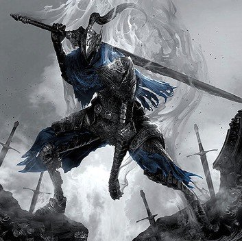
Rytíř Artorias
Klikni pro rozbor
Největší bojovník a jeden ze Čtyř rytířů krále Gwyna. Artorias the Abysswalker je středobodem
rozšíření Artorias of the Abyss. Legenda praví, že hrdinsky sestoupil do města Oolacile
a zastavil šíření Propasti. Skutečnost je však mnohem temnější a smutnější.
Artorias při obraně Oolacile selhal. Aby zachránil svého věrného vlka Sifa, přenechal mu svůj
magický štít a sám podlehl temnotě. Jeho ruka byla roztříštěna a jeho mysl pohlcena Propastí.
Hráč je ten, kdo cestuje do minulosti a zmutovaného, zešílevšího Artoriase zabije, čímž ho zbaví
utrpení a jeho jménem dokončí úkol. Historie si pak Artoriase pamatovala jako hrdinu jen proto,
že pravý zachránce – bezejmenný hráč – se vrátil do své vlastní doby.
Velký meč Propasti (Abyss Greatsword)
Masivní meč, který lze ukovat z Artoriasovy pošpiněné duše. Umožňuje hráči
provádět Artoriasovy ikonické akrobatické útoky (salta), ale na rozdíl od
původního stříbrného meče je tato zbraň nenávratně sežrána rzí a temnotou.
Velký meč zrozený z duše Rytíře Artoriase,
který propadl Propasti. Bojovník, jenž se tomuto nepříteli postaví obnažen,
brzy pozná absolutní hloubku Artoriasovy moci i jeho čirého šílenství.
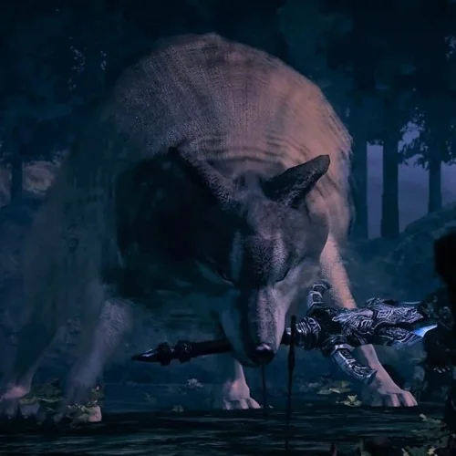
Velký Šedý Vlk Sif
Klikni pro rozbor
Sif byl loajálním zvířecím společníkem rytíře Artoriase. Po smrti svého pána strávil staletí
hlídáním jeho hrobu v Temném lese (Darkroot Garden). Ve své tlamě třímá Artoriasův původní velký
meč a napadá každého, kdo by se pokusil znesvětit hrob a odnést si prsten potřebný k chůzi
Propastí.
Souboj se Sifem je jedním z nejvíce emocionálních zážitků ve hře, obzvláště pokud hráč nejprve
dohraje DLC v minulosti, kde malého Sifa zachrání z Temnoty. V takovém případě Sif v současnosti
hráče před začátkem souboje pozná, smutně zavyje a bojuje jen se silným odporem. Nechce hráče
zabít ze zlosti, ale proto, aby ho ochránil před Propastí, která mu vzala jeho nejlepšího
přítele.
Prsten Úmluvy Artoriase
Tento prsten je nezbytný k tomu, aby se hráč mohl propadnout do prázdnoty a utkat
se se Čtyřmi Králi v Novém Londu, aniž by ho pohlátila nekonečná Temnota.
Prsten patřící Artoriasovi, Poutníkovi
Propasti. Umožňuje nositeli kráčet černočernou prázdnotou. Právě o tento
prsten Velký Šedý Vlk Sif svádí svůj marný, osamělý boj. Zná totiž jeho
prokletí.
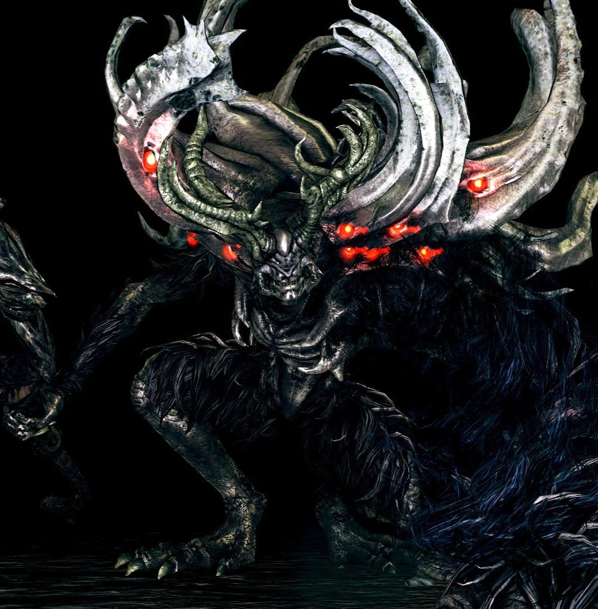
Manus, Otec Temnoty
Klikni pro rozbor
Primordiální člověk, jehož hrobku vykopali a znesvětili pyšní čarodějové z města Oolacile poté,
co jim had Kaathe namluvil lži o jeho moci. Mnoho teorií komunity se přiklání k tomu, že mrtvola
nepatřila nikomu menšímu než samotnému Nenápadnému Pygmejovi.
Ať už jím byl či nikoliv, probuzení této mrtvoly způsobilo, že obrovské množství Lidskosti v něm
nashromážděné zdivočelo. Manus zmutoval do masivní, srstnaté bestie se svítícíma červenýma očima
a jedinou gigantickou rukou. Erupce jeho emocí a Lidskosti vytvořila samotnou Propast (The
Abyss), hmotnou temnotu, která okamžitě zmutovala obyvatele Oolacile a pohltila i legendárního
rytíře Artoriase.
Manusova Hůl (Manus Catalyst)
Zbraň vytvořená z duše samotného Manuse. Slouží k sesílání temné magie, přičemž
využívá nejen inteligenci nositele, ale paradoxně i jeho hrubou sílu, což odráží
Manusovu zvířeckou povahu.
Katalyzátor utvořený z duše Manuse, Otce
Propasti. Ten nebyl ve své podstatě žádným démonem, pouze prapůvodním
člověkem. Odcizení jeho milovaného přívěšku proměnilo jeho lidskost v čirý,
neovladatelný vztek.
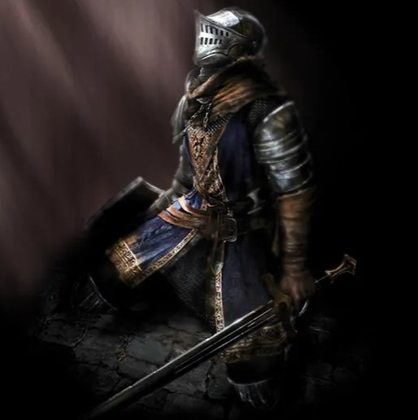
Vyvolený Nemrtvý
Klikni pro rozbor
Postava hráče. Váš příběh nezačíná hrdinským činem, ale hnitím v temné kobce Útočiště Nemrtvých
(Undead Asylum). "Vyvolený Nemrtvý" je pojem z proroctví, které říká, že jeden nemrtvý jednoho
dne unikne z cely, rozezní Zvony probuzení a získá sílu Pánů.
Kouzlo tohoto narativu však spočívá ve skutečnosti, že vy ve skutečnosti nejste vůbec výjimeční.
Neexistuje žádný předem vyvolený osud. Každý hráč, každé NPC (jako Solaire,
Logan, a ostatní), všichni jsou stejnými kandidáty. Vyvoleným se nestáváte díky
proroctví, ale jen a pouze
díky své vlastní nezlomné vůli (a tedy vůli hráče) hru nikdy nevzdat, neodložit ovladač a
nedovolit svému avataru propadnout do stavu bezduchého "Hollow".
Temné znamení (Darksign)
Žhnoucí kruh plamene vepsaný do masa na hrudi nositele. Znamená nesmrtelnost,
avšak prokletou. Znemožňuje definitivní smrt a po každém zabití vás vrací k
poslednímu ohništi, za cenu ztráty vašich duší a paměti.
Darksign je zosobněním Kletby nemrtvých. Kdo
je jím ocejchován, nemůže zemřít, ale dříve či později přijde o rozum. Smrt
po něm za sebou zanechá pouze nashromážděné Duše, a člověk procitne znovu u
ohniště.
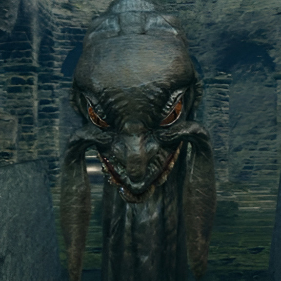
Předvěkoví Hadi
Klikni pro rozbor
Prastaré, zubaté entity, které existovaly pravděpodobně ještě před Věkem Ohně. Kingseeker Frampt
a Darkstalker Kaathe reprezentují dva protichůdné konce hry, avšak oba využívají hráče jen jako
loutku pro své nevyzpytatelné záměry.
Frampt tvrdí, že byl přítelem Gwyna a snaží se vás přesvědčit, abyste splnili "svůj osud"
Vyvoleného nemrtvého a upálili se v plameni pro zachování Věku Ohně. Kaathe se naopak ukrývá v
Propasti a odhaluje vám lži bohů – prozradí vám, že vaším skutečným osudem jakožto potomka
Pygmeje je oheň nechat vyhasnout a stát se Temným Pánem (Dark Lord). Koho z nich poslechnete,
určí osud celého světa, ačkoliv ani jednomu nelze plně důvěřovat.
Nádoba Pánů (Lordvessel)
Klíčový artefakt, o který mají oba hadi enormní zájem. Slouží jako oltář, do
kterého musí hrdina shromáždit duše Pánů k odemknutí cesty ke Gwynovi. Ať už
Nádobu umístíte s kýmkoliv, zpečetíte tím svou příslušnost k jeho straně.
Posvátná Nádoba Pánů, předaná hrdinovi iluzí
v Anor Londu. Má moc propojit již navštívená ohniště, ale její pravý účel je
uchovat Duše Pánů pro odemknutí brány do samotné Pece.
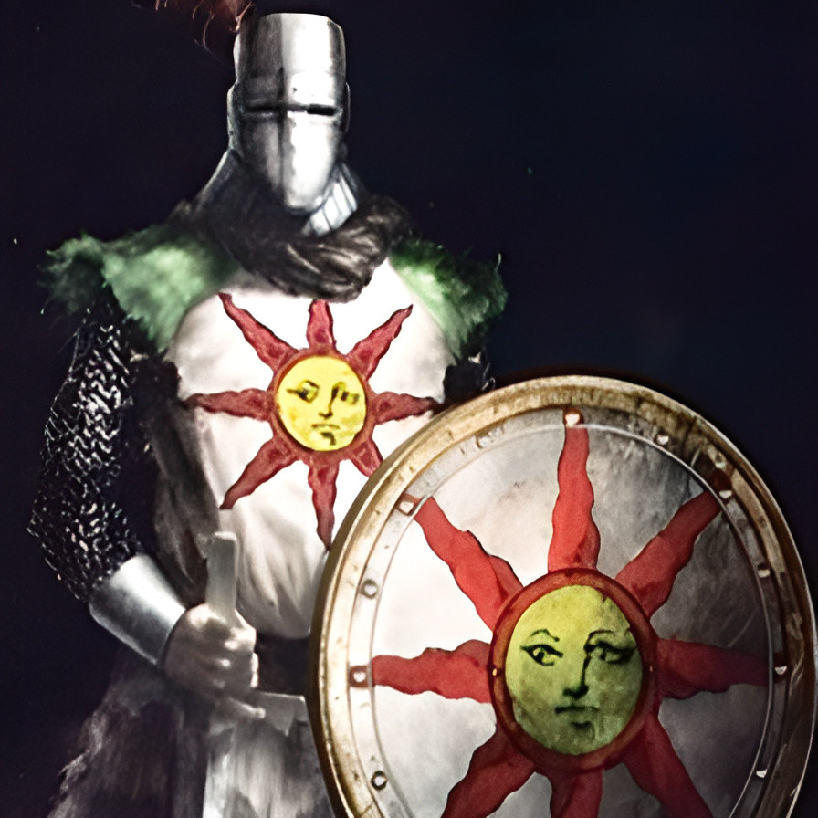
Solaire z Astory
Klikni pro rozbor
Solaire je pravděpodobně nejoblíbenější postavou celé Soulsborne série, symbol naděje ve světě
utápějícím se v temnotě. Tento rytíř z Astory dorazil do Lordranu na svou vlastní pěst, hnán
vizí najít "své vlastní Slunce". Odlišuje se neochvějným optimismem, přátelským přístupem k
hráči a pověstným gestem "Praise the Sun!".
Jeho cesta je však extrémně nebezpečná a může mít dvojí konec. Pokud mu hráč nepomůže včas
otevřít zkratku do Ztraceného Izalithu, Solaire podlehne frustraci z nenalezení Slunce, nasadí
si na hlavu svítícího parazita Sunlight Maggot a zcela zešílí. Pokud ho ale hráč zachrání,
Solaire nabere sílu, postaví se společně s vámi samotnému Gwynovi a ve svém vlastním světě to
bude právě on, kdo slavnostně zažehne První plamen.
Sluneční medaile (Sunlight Medal)
Předmět, který slouží k upevňování kooperativní přísahy Warrior of Sunlight.
Hráči si tyto medaile dávají navzájem jako poděkování za úspěšné společné
zdolání bose.
Medaile udílená těm, kteří prokázali odvahu
v kooperaci, zlatě svítící symbolem Slunce. Pán Světla už svůj dohled dávno
ztratil, ale symbol samotný žije dál, nesen neochvějnou vírou těch, kteří si
stále pomáhají.
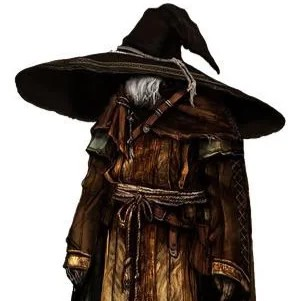
"Velký Klobouk" Logan
Klikni pro rozbor
Logan je pravděpodobně nejslavnějším žijícím čarodějem, který kdy studoval v prestižní Dračí
škole ve Vinheimu (Vinheim Dragon School). Tento přes sto let starý nemrtvý génius vynalezl
ikonická kouzla jako Kopí duše (Soul Spear). Svou přezdívku získal díky gigantickému klobouku,
který nosí záměrně stažený hluboko do tváře. Nedělá to z módních důvodů – klobouk ho izoluje od
okolních pohledů a hluku světa, což mu umožňuje ponořit se do absolutního tranzu a soustředit se
výhradně na svůj výzkum.
Do Lordranu necestoval kvůli proroctví o Vyvoleném, ale hnala ho čirá, až fanatická touha po
vědění. Jeho ultimátním cílem byly Vévodovy archivy (Duke's Archives), legendární knihovna
Bezšupinatého Seatha. Když Logan do archivů skutečně pronikne, je fascinován krystalickou magií.
Lidská mysl však nedokáže bez následků pojmout božské vědění draka. Logan postupně propadá
šílenství, přestává poznávat spojence, v amoku ze sebe strhává veškeré oblečení (kromě svého
klobouku) a nakonec umírá jako nepříčetná schránka, pohlcená stejnou mánií jako kdysi samotný
Seath.
Krystalizovaná Hůl z Cínu(Tin Crystallization Catalyst)
Zbraň, kterou po sobě zcela šílený Logan zanechal ve věži Vévodových archivů. Jde
o vrcholný čarodějný nástroj, který drasticky zvyšuje poškození magií, ale za
obrovskou cenu: snižuje počet použití všech kouzel na polovinu. Přesně to odráží
Loganovo propadnutí bezohledné síle krystalů na úkor vlastní příčetnosti.
Katalyzátor vytvořený Loganem Velkým
kloboukem během jeho pádu do šílenství. Krystaly Bezšupinatého Seatha
propojily čarodějnictví s alchymií. Tento nástroj sice nabízí nesmírnou,
ničivou moc, ale vybírá si krutou daň na samotné mysli svého uživatele.